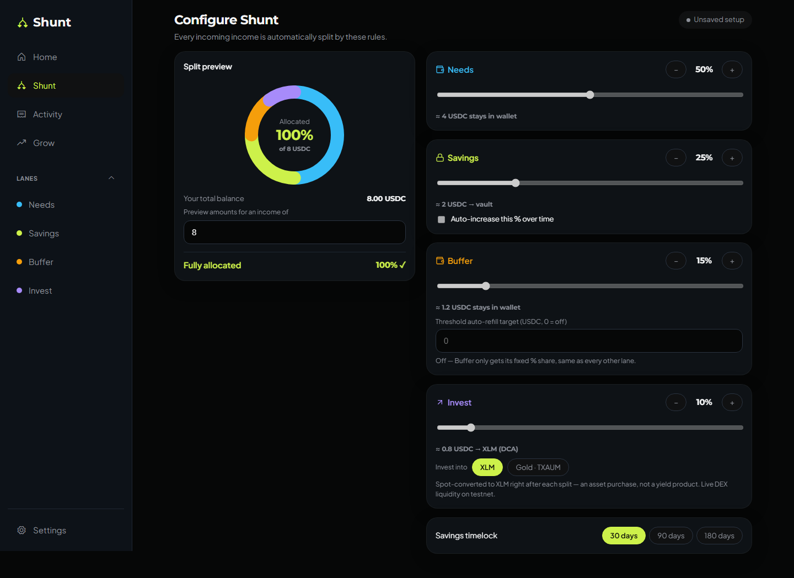
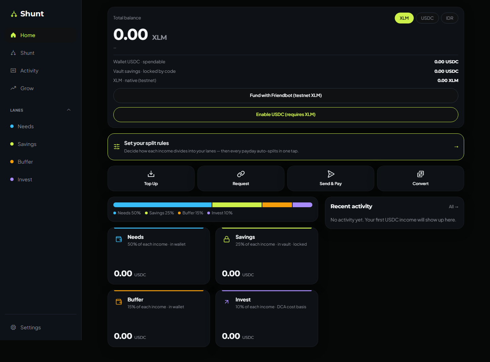
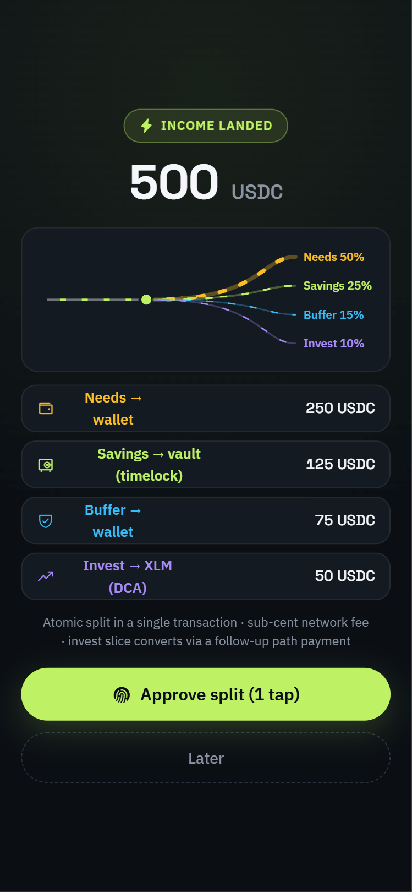
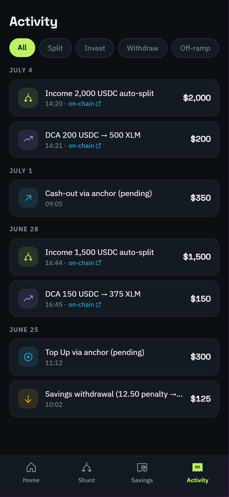
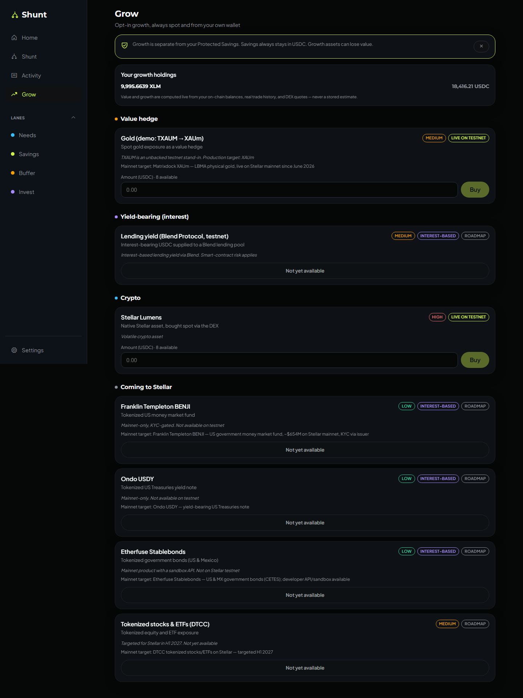
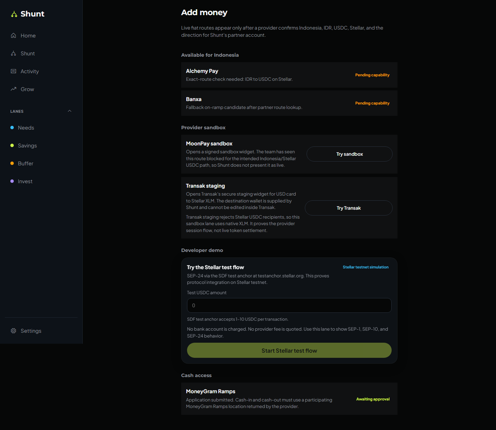

Set the rule once. Review the payday. Keep every signature in your own wallet.

Without a boundary, the urgent job always wins first.
One payday becomes four visible lanes—without surrendering custody.

USDC appears through Horizon.
Exact destinations stay visible before signing.
Soroban enforces the saved allocation.
Every action exposes an inspectable hash.
Set rules. Approve once. Inspect the proof.


Live, test, sandbox, and roadmap are labeled—not blurred together.


Every product promise maps to a rail already used in the testnet product.